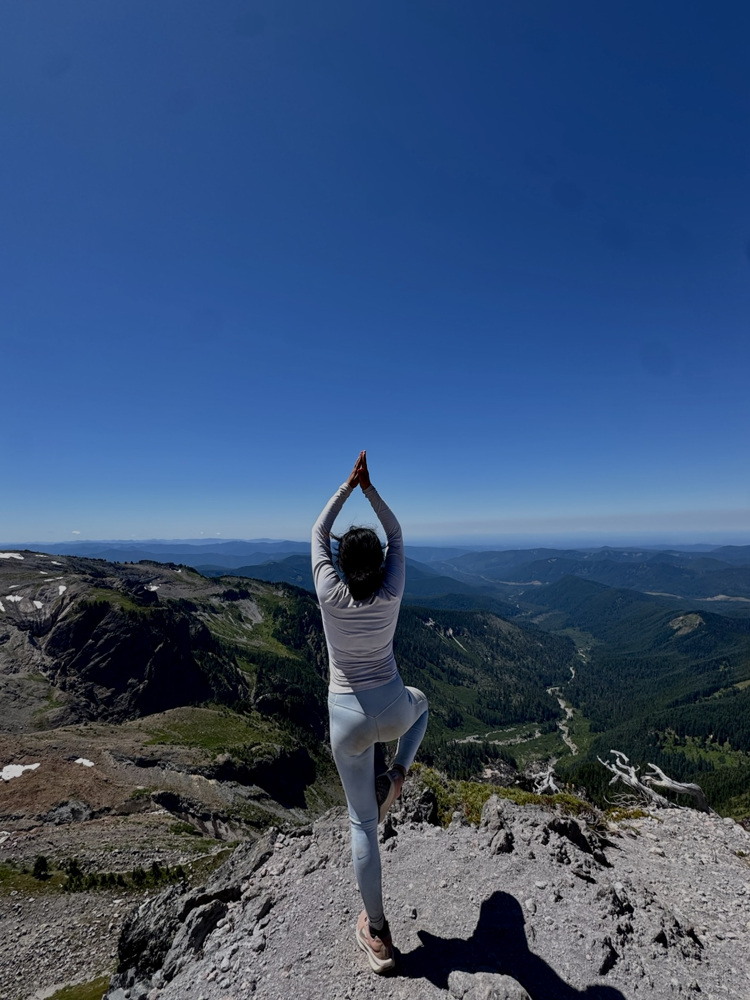
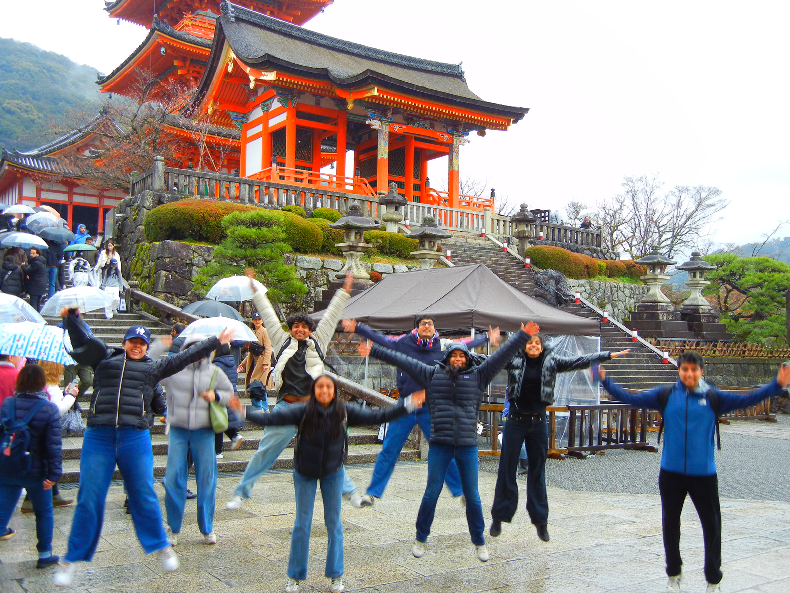

about me


the essentials
priyal, female, twenty-one, indian, grew up in the bay area
UCLA student, aspiring ML/research/software engineer.
likes & hobbies
category one: piano, videogames, analog horror, ARGs, legos, animation & comics [in all forms possible]
category two: hiking to earn a nice view, biking, running, hitting legs, dinner party games, pickleball, travelling the world
why?
in general, i created this site to cache and present my various works.
more than that, however, i'm using this site to hold myself accountable to creating and trying new things: i want to learn by doing, document my work + process along the way, and ultimately grow as a curious and intelligent human!
to be specific, here are the main 3 things i hope to achieve:
> build technology i understand inside and out, including the interesting theoretical asepcts
> explore my creative side through design, music, art etc. and hopefully improve
> document my extensive thoughts on non-fictional and fictional elements. i want to be a person of culture, taste and knowledge/